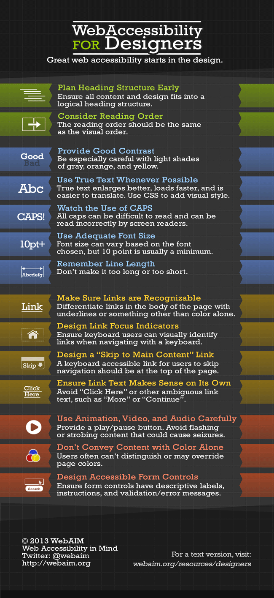
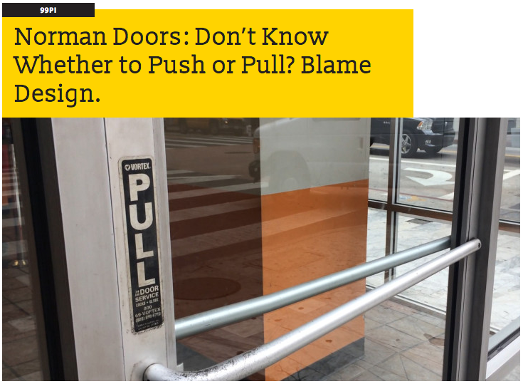

Issues in Tech: Designing for Accessibility
Exercise 4.9
March 6, 2016
Over 7 million Americans have visual disabilities and it is important to keep them in mind when designing a website. While it may be tempting to use low contrast font/background colors if you're looking for a certain feel it is poor design if it fails to convey your message or takes too much work on the viewer's part that they loose interest or curse you. So try to remember these easy guides while you design and you won't loose time creating a project that can't be accessed by everyone.
The first thing you need to do is use proper HTML5 semantic tags and structure your site in a way where important information is tagged as a headline and content is organized appropriately with any quotations, emphesis, or definition marked as such so they will make sense with a browser reader.
On the UI front it is very important to make sure your content can be ready easily. This is achieved with proper contrast between your font color and background color. If they are too similar it will be hard to distinguish the important recognizeable parts of the letters and will be a pain for people to read. Here's a great site for checking font color against a background color. It even gives you a handy ratio and a pass/fail grade for readability. It is important to account for the color blind as well so remember it important to use symbols, or bold/emphasis cues to highlight elements you want to draw attention to rather than simply making them another color.
Here's a friendly chart of points to remember along the design process that can help you have an effective site:

While this isn't specific to web design it is important to analize how your design is guiding people, are you guiding them too your main points and pulling them through your content or do they have to stop and look for your navigation links or relevant content?
